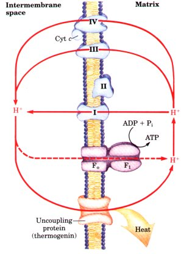
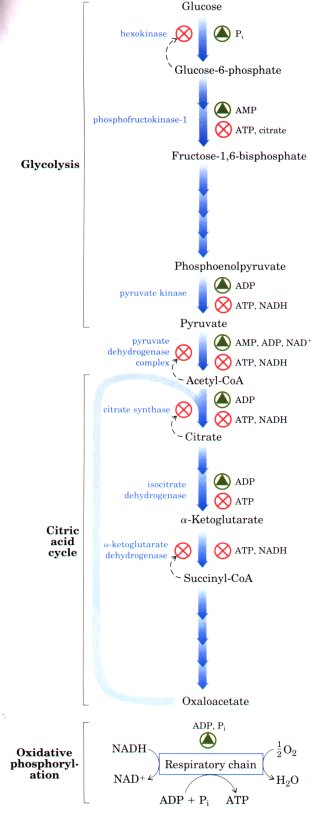
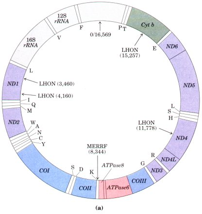
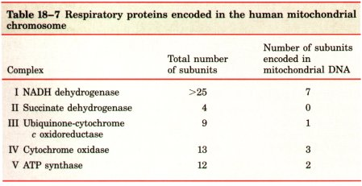
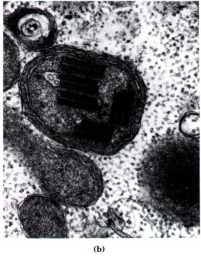
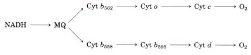
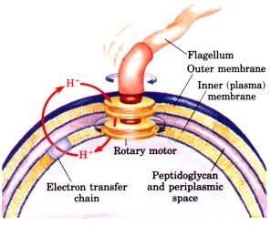

The rate of respiration (O2 consumption) in mitochondria is under tight regulation; it is generally limited by the availability of ADP as a substrate for phosphorylation. As we saw in Figure 18-13b, the respiration rate in isolated mitochondria is low in the absence of ADP and increases strikingly with the addition of ADP; this phenomenon is part of the definition of coupling of oxidation and phosphorylation. The dependence of the rate of O2 consumption on the concentration of the Pi acceptor ADP, called acceptor control of respiration, can be dramatic. In some animal tissues the acceptor control ratio, the ratio of the maximal rate of ADP-induced O2 consumption to the basal rate in the absence of ADP, is at least 10.
The intracellular concentration of ADP is one measure of the energy status of cells. Another, related measure is the mass-action ratio of the ATP-ADP system: [ATP]/([ADP][Pi]). Normally this ratio is very high, so that the ATP-ADP system is almost fully phosphorylated. When the rate of some energy-requiring process in cells (protein synthesis, for example) increases, there is an increased rate of breakdown of ATP to ADP and Pi, lowering the mass-action ratio. With more ADP available for oxidative phosphorylation, the rate of respiration increases, causing regeneration of ATP. This continues until the massaction ratio returns to its normal high level, at which point respiration slows again. The rate of oxidation of cell fuels is regulated with such sensitivity and precision that the ratio [ATP]/([ADP][Pi] fluctuates only slightly in most tissues, even during extreme variations in energy demand. In short, ATP is formed only as fast as it is used in energyrequiring cell activities.
There is a remarkable and instructive exception to the general rule that respiration slows when the ATP supply is adequate. In most mammals, including humans, newborns have a type of adipose tissue called brown fat in which fuel oxidation serves not to produce ATP, but to generate heat to keep the newborn warm. Hibernating mammals (grizzly bears, for example) also have large amounts of brown fat. This specialized adipose tissue, located at the back of the neck of human infants, is brown because of the presence of large numbers of mitochondria and thus large amounts of cytochromes, whose heme groups are strong absorbers of visible light.
| The mitochondria of brown fat oxidize fuels (particularly fatty acids) normally, passing electrons through the respiratory chain to O2. This electron transfer is accompanied by proton pumping out of the matrix, as in other mitochondria. The mitochondria of brown fat, however, have a unique protein in their inner membrane: thermogenin, also called the uncoupling protein (UCP) (Table 18-4). This protein, an integral membrane protein, provides a path for protons to return to the matrix without passing through the F0F1 complex (Fig. 18-27). As a result of this short-circuiting of protons, the energy of oxidation is not conserved by ATP formation but is dissipated as heat, which contributes to maintaining the body temperature. For the hairless newborn infant, maintaining body heat is an important use of metabolic energy. Hibernating animals depend on uncoupled mitochondria of brown fat to generate heat during their long winter period of dormancy (see Box 16-1). |  Figure 18-27 The uncoupling protein (thermogenin) of brown fat mitochondria, by providing an alternative route for protons to reenter the mitochondrial matrix, causes the energy conserved by proton pumping to be dissipated as heat. |
| The major catabolic pathways
(glycolysis, the citric acid cycle, fatty acid and amino
acid oxidation, and oxidative phosphorylation) have
interlocking and concerted regulatory mechanisms that
allow them to function together in an economical and self
regulating manner to produce ATP and biosynthetic
precursors. The relative concentrations of ATP and ADP
control not only the rates of electron transfer and
oxidative phosphorylation but also the rates of the
citric acid cycle, pyruvate oxidation, and glycolysis
(Fig. 18-28). Whenever there is an increased drain on
ATP, the rate of electron transfer and oxidative
phosphorylation increases. Simultaneously, the rate of
pyruvate oxidation via the citric acid cycle increases,
thus increasing the flow of electrons into the
respiratory chain. These events can in turn evoke an
increase in the rate of glycolysis, increasing the rate
of pyruvate formation. When the conversion of ADP to ATP
lowers the ADP concentration, acceptor control will slow
electron transfer and thus oxidative phosphorylation.
Glycolysis and the citric acid cycle will also slow,
because ATP is an allosteric inhibitor of
phosphofructokinase-1 (see Fig. 14-20) and of pyruvate
dehydrogenase (see Fig. 15-14). Phosphofructokinase-1 is inhibited not only by ATP but by citrate, the first intermediate of the citric acid cycle. When both ATP and citrate are elevated they produce a concerted allosteric inhibition that is greater than the sum of their individual effects. In many types of tumor cells, this interlocking coordination appears to be defective: glycolysis proceeds at a higher rate than required by the citric acid cycle. As a result, cancer cells use far more blood glucose than normal cells, but cannot oxidize the excess pyruvate formed by rapid glycolysis, even in the presence of O2. To reoxidize cytoplasmic NADH, most of the pyruvate is reduced to lactate (Chapter 14), which passes from the cells into the blood. The high glycolytic rate may result in part from smaller numbers of mitochondria in tumor cells. In addition, some tumor cells overproduce an isozyme of hexokinase that associates with the cytosolic face of the mitochondrial inner membrane and is insensitive to feedback inhibition by glucose-6phosphate (p. 432). This enzyme may monopolize the ATP produced in mitochondria, using it to produce glucose-6-phosphate and committing the cell to continue glycolysis. |
 Figure 18-28 Interlocking regulation of glycolysis, pyruvate oxidation, the citric acid cycle, and oxidative phosphorylation by the relative concentrations of ATP, ADP, and AMP, and by NADH. High [ATP] (or low [ADP] and [AMP]) produces low rates of glycolysis, pyruvate oxidation, acetate oxidation via the citric acid cycle, and oxidative phosphorylation. All four pathways are accelerated when there is an increase in the rate of ATP utilization and increased formation of ADP, AMP, and P;. Interlocking of glycolysis and the citric acid cycle by citrate, which inhibits glycolysis, supplements the action of the adenine nucleotide system. In addition, increased levels of NADH and acetyl-CoA also inhibit the oxidation of pyruvate to acetyl-CoA, and high [NADH]/[NAD+] ratios inhibit the dehydrogenase reactions of the citric acid cycle (p. 469). |
Mitochondria contain their own genome, a circular, double-stranded DNA molecule. There are 37 genes (16,569 base pairs) in the human mitochondrial chromosome (Fig. 18-29), including 13 that encode proteins of the respiratory chain (Table 18-7); the remaining genes code for ribosomal and transfer RNA molecules essential to the proteinsynthesizing machinery of mitochondria. Many of the mitochondrial proteins are encoded in nuclear genes, synthesized on cytoplasmic ribosomes, then imported and assembled within mitochondria.
  Mutations in the mitochondrial DNA are known to cause the human disease called Leber's hereditary optic neuropathy (LHON). This rare genetic disease affects the central nervous system, including the optic nerves, causing bilateral loss of vision, of rapid onset, in early adulthood. The disease is invariably inherited from the female parent, a consequence of the fact that all of the mitochondria of the developing embryo are derived from the mother. The unfertilized egg contains many mitochondria, and the few mitochondria in the much smaller sperm cell do not enter the egg at the time of fertilization. Mitochondria arise only from the division of preexisting mitochondria. |
 Figure 18-29 (a) Map of human mitochondrial DNA, showing the genes that encode proteins of Complex I, the NADH dehydrogenase (ND1 to ND6); the cytochrome b of Complex III (Cyt b); the subunits of cytochrome oxidase (Complex IV) (COI to COIII); and two subunits of ATP synthase (ATPase6 and ATPaseB). The colors of the genes correspond to the colors of the complexes shown in Fig. 18-8. Also shown are the genes for ribosomal RNAs (rRNA) and for a number of mitochondrionspecific transfer RNAs. Transfer RNA specificity is indicated by the one-letter codes for amino acids. Arrows indicate the positions where alterations of base sequence (mutations) are known to cause Leber's hereditary optic neuropathy (LHON) and myoclonic epilepsy and ragged-red fiber disease (MERRF). The numbers in parentheses indicate the position of the altered nucleotides; nucleotide number 1 is at the top of the circle. (b) Electron micrograph of an abnormal mitochondrion from the muscle of an individual with MERRF, showing the paracrystalline protein inclusions sometimes present in the mutant mitochondria. |
A single base change in the mitochondrial gene ND4 (Fig. 18-29a) changes an Arg residue to a His residue in one of the proteins of Complex I, and the result is mitochondria partially defective in electron transfer from NADH to ubiquinone. Although these mitochondria are able to produce some ATP by electron transfer from succinate, they apparently cannot supply ATP in sufficient quantity to support the very active metabolism of neurons. One result is damage to the optic nerve, leading to blindness.
A single base change in the mitochondrial gene for cytochrome b, a component of Complex III, also produces LHON, demonstrating that the pathology of the disease results from a general reduction of mitochondrial function, not just from a defect in electron transfer through Complex I.
Another serious human genetic disease, myoclonic epilepsy and ragged-red fiber disease (MERRF) is caused by a mutation in the mitochondrial gene that encodes a transfer RNA (Fig. 18-29). This disease, characterized by uncontrollable muscular jerking, apparently results from defective production of several of the proteins synthesized using mitochondrial transfer RNAs. Skeletal muscle fibers of individuals with MERRF have abnormally shaped mitochondria that sometimes contain paracrystalline structures (Fig. 18-29b).
The fact that mitochondria contain their own DNA, ribosomes, and transfer RNAs supports the theory of the endosymbiotic origin of mitochondria (see Fig. 2-17). This theory supposes that the first organisms capable of aerobic metabolism, including respiration-linked ATP production, were prokaryotes. Primitive eukaryotes that lived anaerobically (by fermentation) acquired the ability to carry out oxidative phosphorylation when they established a symbiotic relationship with bacteria living in their cytosol. After much evolution and the movement of many bacterial genes into the nucleus of the "host" eukaryote, the endosymbiotic bacteria eventually became mitochondria.
This theory presumes that early free-living prokaryotes had the enzymatic machinery for oxidative phosphorylation, and it predicts that their modern prokaryotic descendents have respiratory chains closely similar to those of modern eukaryotes. They do.
Aerobic bacteria carry out NAD-linked electron transfer from substrates to O2, coupled to the phosphorylation of cytosolic ADP. The dehydrogenases are located in the bacterial cytosol, but the electron carriers of the respiratory chain are in the plasma membrane. The electron carriers are similar to those of mitochondria, act in the same sequence (Fig. 18-30), and translocate protons outward across the plasma membrane concomitantly with electron transfer to O2. We noted earlier that bacteria such as E. coli have F0F1 complexes in their plasma membranes; the F1 portions protrude into the cytosol and catalyze ATP synthesis from ADP and Pi as protons flow back into the cell through proton channels formed by F0.
Figure 18-30 Respiratory chain in the inner membrane of E. coli. Electrons from NADH pass to menaquinone (MQ), at which point the chain branches. The upper path is dominant in cells grown under normal aerobic conditions, but when O2 is the limiting factor in growth, the lower route predominates.

| Certain bacterial transport systems bring about uptake of extracellular nutrients (lactose, for example) against a concentration gradient, in symport with protons (see Fig. 10-25). The respiration-linked transmembrane proton extrusion provides the driving force for this uptake. The rotary motion of bacterial flagella, which move cells through their surroundings, is provided by "proton turbines," molecular rotary motors driven not by ATP but directly by the transmembrane electrochemical potential generated by respiration-linked proton pumping (Fig. 18-31). It appears likely that the chemiosmotic mechanism evolved early (before the emergence of eukaryotes). The protonmotive force can clearly be used to power processes other than ATP synthesis. |  Figure 18-31 Rotation of bacterial flagella by proton-motive force. The shaft and rings at the base of the flagellum make up a rotary motor that has been called a "proton turbine." Protons ejected by electron transfer flow back into the cell through the "turbine," causing rotation of the shaft of the flagellum. This motion differs fundamentally from the motion of muscle or of eukaryotic flagella and cilia, for which ATP hydrolysis is the energy source. |